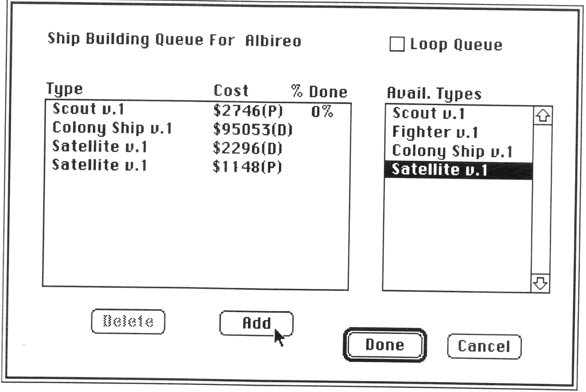

Building Ships
You can build ships at any of your colonies. To do so, click on the planet where you want to build ships and select “Build Ships...” from the “Ships” menu. On the right will be a list of all the available ship types. On the left will be the list of queued ships. To add a ship to the queue, select the type of ship you want to build on the right and click the “Add” button. To remove a ship from the queue, click on the ship in the queue and click the “Delete” button.
Once you’ve queued ships at a planet, don’t forget to spend money on the planet and to spend some of the planet’s money on shipbuilding. If you don’t, no ships will be built.
If the top ship on the queue was not completed in one turn, you can find out how much was completed by looking at the %Done field in the “Build Ships...” dialog. If after three turns, a ship is only 5% done, you probably want to spend more money on it or it will be obsolete before it’s done...
